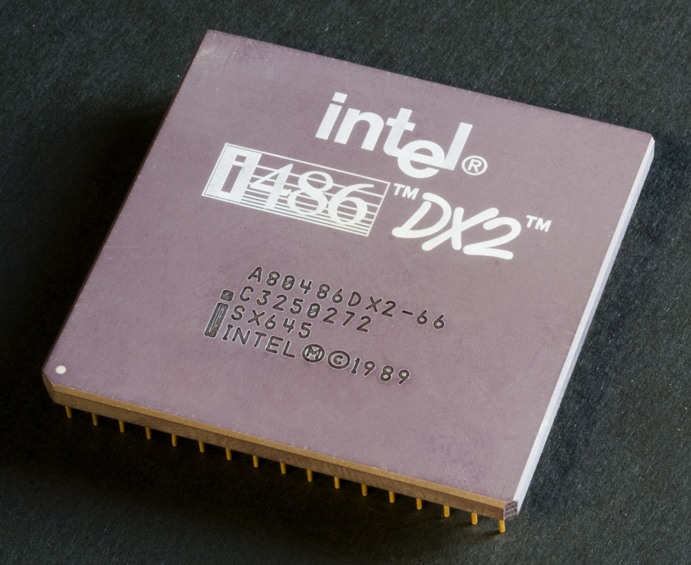
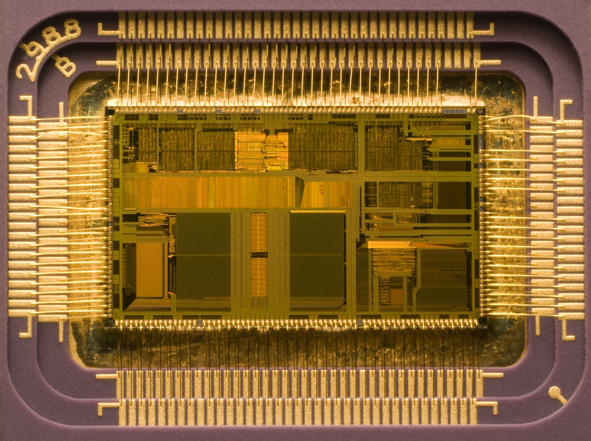

La unidad central de procesamiento o unidad de procesamiento central (conocida por las siglas CPU, del inglés: central processing unit), es el hardware dentro de una computadora u otros dispositivos programables, que interpreta las instrucciones de un programa informático mediante la realización de las operaciones básicas aritméticas, lógicas y de entrada/salida del sistema. El término en sí mismo y su acrónimo han estado en uso en la industria de la Informática por lo menos desde el principio de los años 1960.1 La forma, el diseño de CPU y la implementación de las CPU ha cambiado drásticamente desde los primeros ejemplos, pero su operación fundamental sigue siendo la misma.
Una computadora puede tener más de una CPU; esto se llama multiprocesamiento. Todas las CPU modernas son microprocesadores, lo que significa que contienen un solo circuito integrado (chip). Algunos circuitos integrados pueden contener varias CPU en un solo chip; estos son denominados procesadores multinúcleo. Un circuito integrado que contiene una CPU también puede contener los dispositivos periféricos, y otros componentes de un sistema informático; a esto se llama un sistema en un chip (SoC).
Dos componentes típicos de una CPU son la unidad aritmético lógica (ALU), que realiza operaciones aritméticas y lógicas, y la unidad de control (CU), que extrae instrucciones de la memoria, las decodifica y las ejecuta, llamando a la ALU cuando sea necesario.
No todos los sistemas computacionales se basan en una unidad central de procesamiento. Una matriz de procesador o procesador vectorial tiene múltiples elementos cómputo paralelo, sin una unidad considerada el "centro". En el modelo de computación distribuido, se resuelven problemas mediante un conjunto interconectado y distribuido de procesadores.
 
{kind=link}
{kind=link}